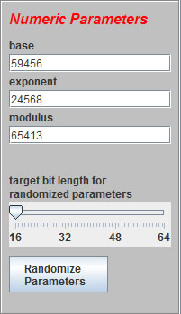
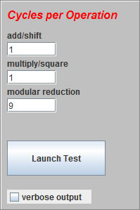

Using the Simulator
Choose be mod nFill in the exponentiation parameters or use the Randomize Parameters button. Choose the bit-length of the random modulus with the slider. Note that specified parameters must be positive and the condition gcd(m, R) = 1 must hold. If invalid parameters are entered, the defaults will be used and the fields updated to the default values. Try choosing different parameters and varying the cycles per operation to see when Montgomery method outperforms standard method. |
 |
Run the SimulatorYou can change the number of cycles for the three arithmetic operations to see how Montgomery method reduces total cycles when modular reduction is costly. Checking the verbose output box will display a step by step walk-through of both algorithms. Leaving this box unchecked will only display results. When the desired parameters are entered, run the simulator with the Launch Test button. |
 |